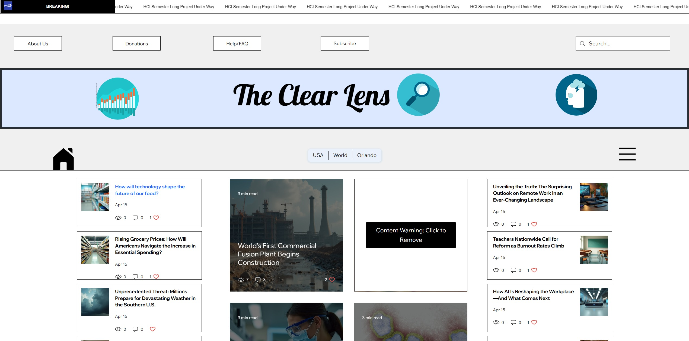

News Article Website
Designed and built a dynamic website that shows updated and unbiased news articles. The website was automated to only post information and articles from trusted APIs.
Skills Learned
- Website development
- Website design
- Collaboration and problem-solving in a group setting